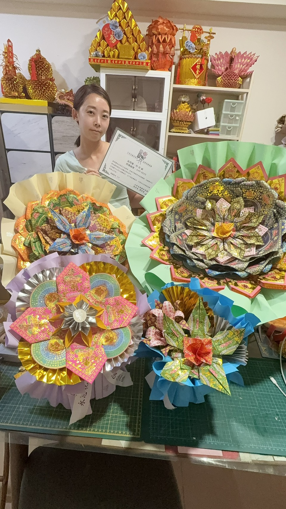

Yongsi Flower
永思花課程與作品
授權師資教學
永思花是專為祭祖、追思、清明、中元與告別式等場合設計的供花作品，以金紙紙藝呈現慎終追遠的心意，作品具有專利設計，適合用於追思供花與祭祖供花。
昌久貹主理人林韵媃持有永思花授權師資，師資編號 A49001Y，在台中開設永思花紙藝課程，也提供永思花作品訂製與販售。
查看課程資訊 LINE 洽詢
授權師資教學
由持有永思花授權師資的主理人林韵媃授課，依正式課程內容帶領學員理解材料、結構與追思供花的作品細節。
台中開課
永思花課程於台中安排梯次，新手可學，從基礎步驟到作品完成，適合想學習祭祖供花、追思供花與金紙紙藝的學員。
可延伸接單
完成課程後可持續練習作品細節，依能力延伸接單、清明祭祖供花、中元供品與告別式追思花禮等需求。
永思花作品訂製服務
永思花作品適合清明、中元、祭祖、追思與告別式等場合。昌久貹可依用途、預算、交期與供奉需求討論作品方向，製作承載思念與敬意的金紙供花作品。
每一件永思花作品都會依情境溝通，讓追思不只停留在形式，而能以細緻紙藝保留對家人、祖先與重要之人的思念。
Contact
永思花課程與作品洽詢
想了解永思花台中課程、授權師資教學、祭祖供花、追思供花或作品訂製販售，都可以透過 LINE 與昌久貹聯繫。
回課程專區 加入 LINE 詢問